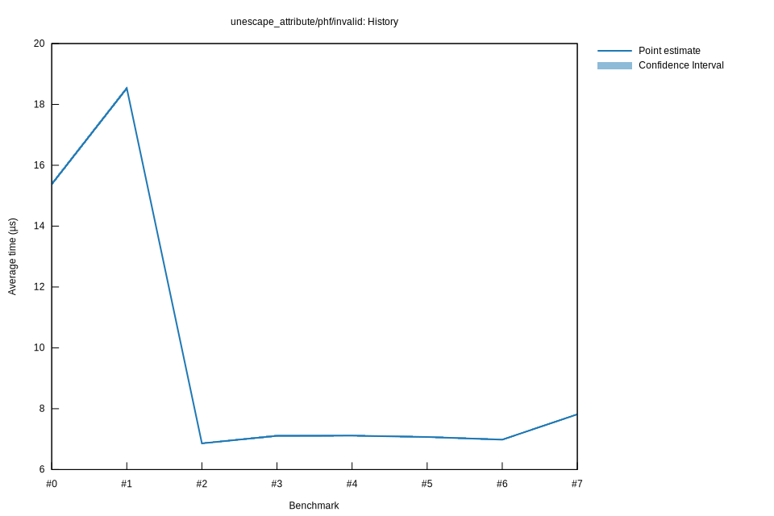

# 62025-10-31T17:57:48-07:00
|
Lower Bound |
Estimate |
Upper Bound |
| Value: |
6.95µs |
6.98µs |
7.01µs |
| Throughput: |
2317.55MiB/s |
2307.69MiB/s |
2297.20MiB/s |
| Change in Value: |
-1.8937% |
-0.9010% |
+0.2382% |
| Change in Throughput: |
+1.9303% |
+0.9092% |
-0.2377% |
Change within noise threshold.
# 52025-10-31T17:51:10-07:00
|
Lower Bound |
Estimate |
Upper Bound |
| Value: |
7.04µs |
7.07µs |
7.10µs |
| Throughput: |
2288.70MiB/s |
2279.03MiB/s |
2268.72MiB/s |
| Change in Value: |
-1.0125% |
-0.2429% |
+0.5304% |
| Change in Throughput: |
+1.0228% |
+0.2435% |
-0.5276% |
Change within noise threshold.
# 42025-10-29T22:29:59-07:00
|
Lower Bound |
Estimate |
Upper Bound |
| Value: |
7.09µs |
7.11µs |
7.14µs |
| Throughput: |
2273.72MiB/s |
2264.86MiB/s |
2255.58MiB/s |
| Change in Value: |
-0.9047% |
-0.1873% |
+0.4990% |
| Change in Throughput: |
+0.9130% |
+0.1876% |
-0.4966% |
Change within noise threshold.
# 32025-10-29T22:23:24-07:00
|
Lower Bound |
Estimate |
Upper Bound |
| Value: |
7.07µs |
7.11µs |
7.15µs |
| Throughput: |
2277.84MiB/s |
2266.81MiB/s |
2254.49MiB/s |
| Change in Value: |
+2.2883% |
+3.1908% |
+4.0662% |
| Change in Throughput: |
-2.2371% |
-3.0921% |
-3.9074% |
No change in performance detected.
# 22025-10-29T19:47:48-07:00
|
Lower Bound |
Estimate |
Upper Bound |
| Value: |
6.84µs |
6.86µs |
6.89µs |
| Throughput: |
2356.99MiB/s |
2348.55MiB/s |
2339.45MiB/s |
| Change in Value: |
-63.281% |
-62.817% |
-62.424% |
| Change in Throughput: |
+172.34% |
+168.94% |
+166.13% |
No change in performance detected.
# 12025-10-29T19:04:39-07:00
|
Lower Bound |
Estimate |
Upper Bound |
| Value: |
18.47µs |
18.53µs |
18.60µs |
| Throughput: |
872.23MiB/s |
869.51MiB/s |
866.49MiB/s |
| Change in Value: |
+19.954% |
+21.269% |
+22.590% |
| Change in Throughput: |
-16.635% |
-17.539% |
-18.427% |
No change in performance detected.
# 02025-10-26T16:48:52-07:00
|
Lower Bound |
Estimate |
Upper Bound |
| Value: |
15.32µs |
15.38µs |
15.44µs |
| Throughput: |
1051.95MiB/s |
1047.97MiB/s |
1043.68MiB/s |